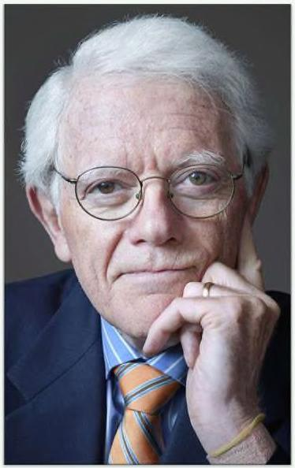

Một định nghĩa tốt về mộtthiên tài đầu tưlà người có thể làm điều bình thường khi tất cả những người xung quanh đang phát điên. Khi bạn chấp nhận một số sự kiện thúc đẩy mọi thứ trong kinh doanh, đầu tư và tài chính, bạn nhận ra có rất nhiều điều sai sót, đổ vỡ, thất bại và sa sút là điều bình thường. Nếu bạn là một người chọn cổ phiếu tốt, bạn có thể sẽ đúng một nửa thời gian. Nếu bạn là một nhà lãnh đạo kinh doanh giới, có thể một nửa số ý tưởng chiến lược và sản phẩm của bạn sẽ hoạt động. Nếu bạn là một nhà đầu tư giỏi, hấu hết các năm sẽ ổn, và nhiều năm sẽ rất tệ. Nếu bạn là một nhân viên giỏi, bạn sẽ tÌm được công ty phù hợp trong lĩnh vực phù hợp sau nhiều lần thử và sai. Peter Lynch là một trong những nhà đầu tư tốt nhất trong thời đại của chúng ta. Ông từng nói: “Nếu bạn xuất sắc trong lĩnh vực kinh doanh này, bạn chỉ cần đúng 6 trong số 10 lân”. Có những lĩnh vực mà bạn phải hoàn hảo mọi lúc. Lái máy bay chẳng hạn. Và có những lĩnh vực mà bạn muốn ít nhất là khá tốt gần như mọi lúc. Giả sử như một đầu bếp nhà hàng. Đầu tư, kinh doanh và tài chính không giống những lĩnh vực này. Một điều tôi đã học được từ cả các nhà đầu tư và doanh nhân là không ai đưa ra quyết định tốt mợi lúc. Những người ấn tượng nhất chứa đầy những ý tưởng kinh khủng thường được thực hiện. Amazon. Thật không bình thường khi nghĩ một buổi ra mắt sản phẩm thất bại tại một công ty lớn sẽ là bình thường và tốt đẹp. Theo trực giác, bạn nghĩ (F0 nên xín lỗi các cổ đông. Nhưng Giám đốc điều hành Jeff Bezos đã nói ngay sau sự ra mắt thảm hại của Fire Phone: Nếu bạn nghĩ đó là một thất bại lớn, chúng tôi đang nghiên cứu những thất bại lớn hơn nhiều. Tôi không đùa. Một số trong đó sẽ làm cho Fire Phone trông giống như một đốm sáng nhỏ. Việc Amazon mất nhiều tiền với Fire Phone cũng không sao vì sẽ được bù đắp bởi một thứ như Amazon Web Services (AWS) kiếm được hàng chục tỷ đô la. Giám đốc điều hành Netflix Reed Hastings từng tuyên bố công ty của ông đang hủy bỏ một số sản phẩm kinh phí lớn. Ông ấy đã nói: Tỷ lệ trúng đích của chúng tôi hiện đang quá cao. Tôi luôn thúc đẩy nhóm nội dung. Chúng tôi phải chấp nhận rửi ro nhiều hơn. Bạn phải thử nhiều thứ điên rồ hơn, bởi vì chúng ta nên có tỷ lệ hủy bỏ nói chung cao hơn.
